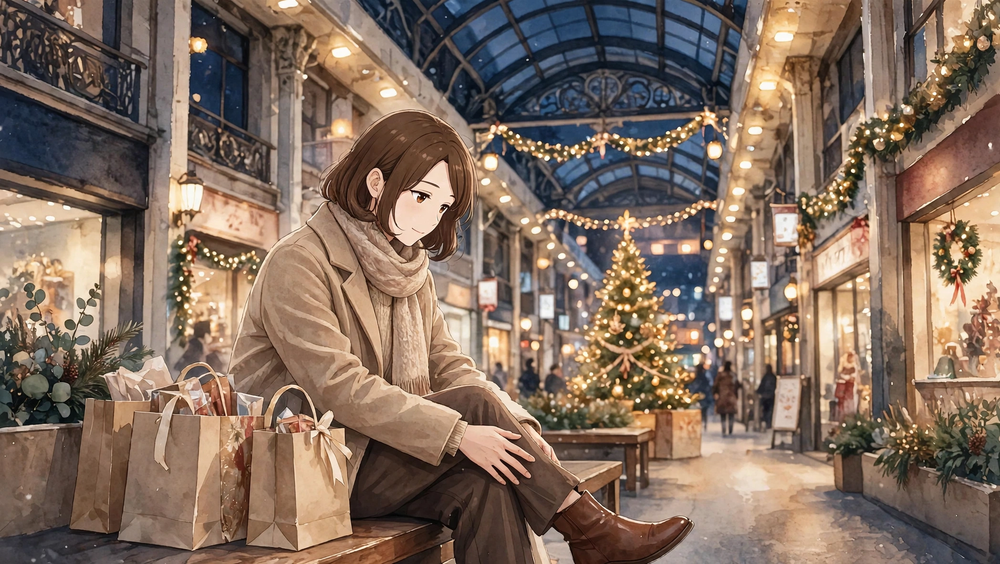

梅田でクリスマスの買い物で歩き回った日に気になる足の疲れ｜要因の整理とセルフケア、受診の目安ハウツー

梅田で働く・暮らす方へ。クリスマスの買い物で梅田の街を歩き回った日に「帰る頃には足裏がじんじん重く感じる」「ふくらはぎが張って、ブーツがきつく感じる」「翌朝まで脚の重さが残る気がする」と感じる足の疲れについて、一般的な解説と考えられる要因の整理、その日の夜と翌日に取り入れられるセルフケア、医療機関への受診の目安をまとめました。一般的な健康情報としてお読みください。
#梅田 クリスマス 買い物 足の疲れ#歩き回った日 脚の疲れ#足の疲れ セルフケア#クリスマス ショッピング 脚 疲れ#梅田 女性専用 サロン 足 冬
クリスマスの買い物で歩き回った日に気になる足の疲れとは（一般的な解説）
足の疲れとは、病名ではなく、「足裏がじんじん重く感じる」「ふくらはぎが張って重だるい」「靴やブーツが夕方にはきつく感じる」と感じる感覚を表す言葉として使われることがあります。ふだんの通勤や買い物では気にならない程度でも、クリスマス前の買い物で百貨店や地下街、駅ビルを行き来する日は、気づかないうちに歩く距離と立っている時間が重なり、帰りの電車に乗る頃や帰宅後に初めて「今日は足にきた」と自覚する方が少なくありません。プレゼント選びで何軒も見て回る、ラッピングや会計の列に並ぶ、イルミネーションを見ながら少し遠回りする——楽しい用事が重なる日ほど、足への負担も重なりやすいのがこの時期の特徴とされます。感じ方には個人差が大きく、歩いた距離や履いていた靴、その日の体調によっても変わるとされます。
大切なのは、「ふだんの休日と比べてどうか」「どんな日に気になりやすいか」という視点です。何時間歩いたのか、立ち止まって待つ時間は長かったのか、重い荷物を持つ時間はあったのか——気になりやすい場面を簡単に振り返っておくと、次に買い物へ出かける日の備えにもつながります。この記事では、クリスマスの買い物で歩き回った日に気になる足の疲れの一般的な解説と、背景として考えられる要因の整理からお伝えします。なお、足の疲れの感じ方だけで体の状態を判断することはできません。気になる変化が続く場合は、後半の「受診の目安」もあわせてご確認ください。
考えられる要因の整理
1つ目は、歩く距離と立っている時間の重なりです。クリスマスの買い物の日は、店舗の間を移動する歩行に加えて、試着や会計、ラッピングの待ち時間など、その場に立ち続ける時間も長くなりがちです。ふくらはぎは「第二の心臓」とも呼ばれ、歩くたびの筋肉の収縮が脚の巡りを支えるポンプのような役割を担うとされますが、立ち止まったままの時間が長いと、その働きが控えめになり、脚に重だるさや張りを感じやすくなると考えられます。逆に、歩き続ける時間が長ければ、足裏やふくらはぎそのものへの負担が重なります。歩くと立ち止まるが交互に重なる日ほど、夕方に足の疲れを自覚しやすい、という声が聞かれます。ただし、感じ方には個人差があり、「歩きすぎが原因」と決めつけられるものではありません。
2つ目は、靴と荷物です。クリスマスのお出かけでは、ふだんよりヒールの高い靴やブーツを選ぶ方も多く、底の硬い靴で石畳やタイルの上を長く歩くと、足裏への負担が重なりやすいとされます。買い物袋が増えるにつれて荷物が重くなり、片側の手だけで持ち続ける時間が長くなると、体のバランスを取るために脚や腰にも力が入りやすくなります。帰る頃に「ブーツがきつい」と感じる背景には、一日の歩行で脚が張って感じられることも重なっていると考えられます。
3つ目は、冬の冷えと、屋内外の温度差です。12月の梅田は、暖房のきいた百貨店や地下街と、冷たい外気を行き来する移動が多くなります。冷えた環境では体が縮こまりやすく、脚まわりもこわばりやすいとされます。イルミネーションを見ながらの歩行は楽しい反面、寒さの中で立ち止まる時間も生まれます。東洋医学では、脚の巡りは、脚の内側を巡る脾経や腎経、前面を巡る胃経のエリアと重ねて考えられてきた歴史があります。要因はひとつではなく、歩いた距離や靴、寒さによって組み合わせが変わるため、思い当たるものをひとつずつ見直すことが大切です。
歩き回った日の夜と翌日のセルフケア
まずは「帰宅したら、温めて脚を休める」ことです。その日の夜は、湯船にゆっくりつかって脚全体を温める、クッションや丸めたタオルの上に脚をのせて横になる、といった過ごし方は、歩き回った日の脚をいたわる基本とされます。入浴後に、ふくらはぎを手のひらで下から上へやさしくなでるようなケアも、自宅で取り入れやすいものです。力を入れて強くもむ必要はありません。着圧タイプの靴下などを使う場合は、サイズや使い方の表示を確認し、締め付けが強すぎると感じるものは避けてください。
次に「足首をゆっくり動かす」ことです。座ったままでも、足首をゆっくり大きく回す、つま先を手前と奥へ倒す、かかとを上げ下げする動きは、ふくらはぎをやさしく動かすきっかけになります。お風呂上がりや、翌朝起きてすぐのタイミングに取り入れる方もいます。強く動かしたり、痛みを感じるほど伸ばしたりする必要はありません。翌日も重さが残る気がする日は、予定を詰め込みすぎず、エスカレーターやエレベーターも使いながら、脚を休める時間を確保することも大切とされます。
次回の買い物への備えとしては、歩き慣れた靴を選ぶ、荷物が増えたらコインロッカーや配送サービスを使って手荷物を軽くする、店舗を回る合間にカフェやベンチで座る区切りを作る、といった工夫が挙げられます。ただし、セルフケアはあくまで日常の足の疲れへの対処です。特定の方法に頼りすぎたり、気になる状態を我慢して様子を見続けたりしないようにしてください。重さが強い日は、ケアよりもまず体を休めることを優先することも大切です。
受診の目安｜こんなときは医療機関へ
歩き回った日の足の疲れの多くは、歩行量の重なりや靴、冷えといった日常の要素が重なって感じられるとされますが、中には医療機関での確認を優先したいサインもあります。「片方の脚だけが急に腫れて、痛みや熱っぽさを伴う」「足の甲や足裏に強い痛みがあり、歩くのがつらい状態が続く」「脚の赤みや色の変化、皮膚のただれがある」「しびれが続く、力が入りにくい感じがする」「数日休んでも重さや痛みが変わらず、少しずつ強くなっている」「息苦しさや胸の痛みを伴う」といった場合は、セルフケアで様子を見続けず、整形外科や内科など医療機関への受診をおすすめします。
また、足の疲れと思っていた背景に、血管や関節、神経の状態など、検査で初めて分かる要素が関係していることもあるため、気になる状態が続く場合は一度相談してみてください。当店のケアはリラクゼーションを目的としたボディケアで、足の疲れや病気を診断したり、それらに対応したりするものではありません。医療機関での確認を優先したうえで、日常のコンディションを整える選択肢のひとつとしてご利用ください。
当店でのケアとサロンのご案内
ステラポラリスは、大阪・梅田エリアのレンタルサロンで施術する女性専用・完全予約制のサロンです。営業は月〜土17:00〜22:00（日曜休み）、施術はオイルマッサージと美容整体、料金は90分10,000円です。ご予約はLINE公式アカウント「ポラリス美容整体院」で受付中です。場所は大阪市北区堂山町12-5 ロイヤルハイツ梅田Ⅱ 303号室（レンタルサロンACE内）、中崎町駅から徒歩5分・阪急梅田駅から徒歩8分です。入室方法の詳細はご予約確定後にLINEでご案内します。
施術では、その日の体調や気になる部位をうかがい、足裏やふくらはぎ、脚全体から、腰や背中までを順にほぐしながら、巡りを意識したケアを組み立てます。買い物で歩き回って体が重く感じられる日は、静かに休む時間を大切にする進め方も選べますので、遠慮なくお伝えください。担当は施術歴30年・鍼灸師資格を持つセラピスト1名で、当店では鍼灸施術は行いません。関連するお悩みページ「足の疲れ」「夕方の脚の重だるさ」でも、体の見方やケアの考え方を紹介していますので、あわせてご覧ください。料金や営業時間の詳細は、メニュー・料金ページでもご確認いただけます。